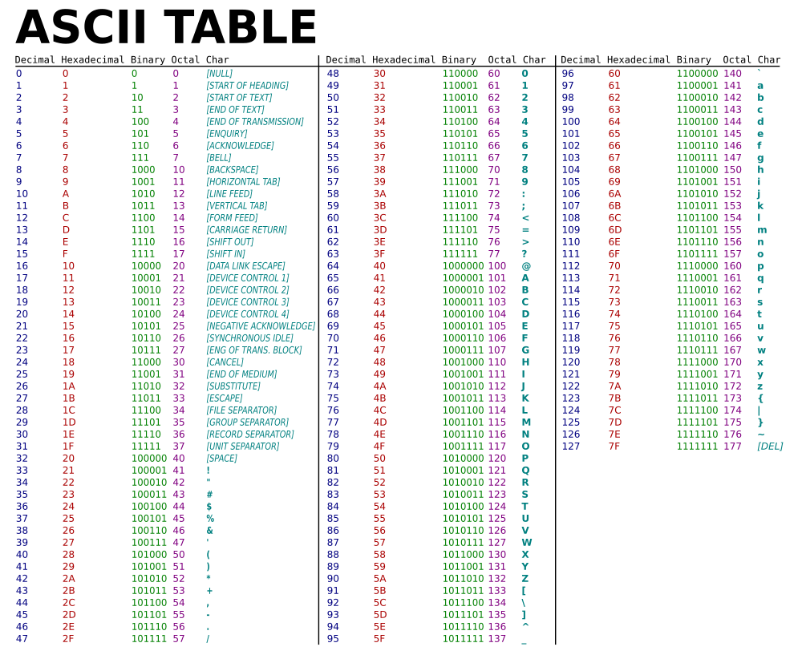

<div class="row">
    <div class="col">
        <div class="training-text-section">
            <p>
                Keeping things simple, there are basically 3 core primitive types. Booleans, characters, and numbers.
                Boolean values are the simplest. They can be represented with 1 bit, as a boolean can only have the
                values "true" or "false." Character values represent the letters and symbols we use to create language.
                You're reading characters right now! We said there are "basically" 3 primitive types because numbers are
                not a type on their own. There are actually many different primitive types used to represent numbers,
                but they all share the fact that the bits used to make them up represent numbers, so we can do binary
                mathematical operations on them. Let's focus on characters for this exercise.
            </p>
        </div>
        <div class="training-text-section">
            <p>
                We'll keep things simple and old-school to start out. Each character you see on the screen or your
                keyboard is stored in 1 byte. The way characters work is that each
                character is assigned a numeric value between 0 and 127. If you recall your powers of 2, 2^7 = 128, so
                with 7 bits we can represent 128 characters by storing their assigned number in binary in a byte. How do
                we know which number corresponds to which character? ASCII! ASCII stands for the "American Standard Code
                for Information Interchange." Basically, a group of people got together because they realized the world
                needed a standard number-to-character translator, which we call a "character encoding." Without a common
                character encoding, devices and computers made by different people would not be able to talk to each
                other. If one company assigned the number "1" in binary to the character "A", and another company
                assigned the number "1" in binary to the character "%", then you can bet people sending each other
                messages would be confused! Now some of you eagle-eyed smarty pants may have noticed something wacky. If
                7 bits are used to represent any character, and a byte = 8 bits, what do we do with the extra bit? The
                answer is it depends and the history is long, so punch "ASCII" into Wikipedia if you are really curious,
                but our job is to teach computer science and not give you a boring history lesson.
            </p>
        </div>
        <hr/>
        <div class="training-text-section">
            <h5 class="font-weight-light">Try it Out! Use the ASCII table and punch in the binary number to see the character it represents!</h5>
            <p>
                (Put 7 inputs for bits here, and let people enter binary numbers and show the corresponding character when they do)
            </p>
        </div>
        <div class="d-flex justify-content-center">
            
        </div>
    </div>
</div>